LECTURE 18 · 并发
并行算法
和数据结构
从正确性走向可扩展性：并行算法与数据结构的核心问题。
本讲目录 10 节
导语：锁保证了正确，却不保证扩展
前几讲解决了并发程序“怎么才能正确”的问题：
- 互斥锁阻止数据竞争；
- 条件变量实现任意同步条件；
- 信号量管理计数型资源；
- 并发 bug 的工具与工程约束帮助发现问题。
这一讲转向性能：
当程序已经正确后，如何让性能随线程、CPU 和机器数量增长？
两个关键概念：
- Scale Up：在同一台机器上增加线程 / CPU，性能继续增长；
- Scale Out：增加机器节点，性能继续增长。
flowchart LR
A["正确性：Mutex / CV / Semaphore"] --> B["性能：Scale Up"]
B --> C["更多 CPU / 线程"]
A --> D["Scale Out"]
D --> E["更多机器 / 节点"]
C --> F["并行算法"]
E --> F
F --> G["并行数据结构"]
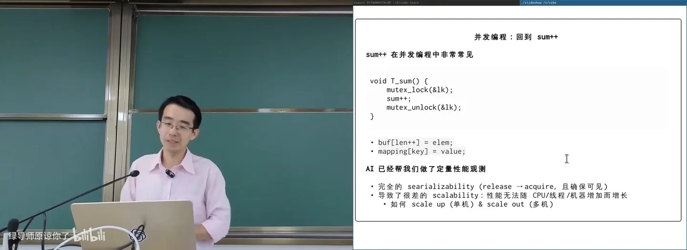
📷 从互斥和同步转向并行算法与数据结构
回到原视频 (00:14:30)
1. sum++ 为什么无法扩展
1.1 完全串行化
void T_sum(void) {
mutex_lock(&lk);
sum++;
mutex_unlock(&lk);
}
锁确保正确，但也把每次 sum++ 完全串行化。
如果总操作次数为 N，临界区每步耗时 t：
大量线程下，T ≈ N × t
增加 CPU 并不能减少串行部分，只增加等待和竞争。
flowchart LR
T1["线程 1"] --> L["同一把锁"]
T2["线程 2"] --> L
T3["线程 3"] --> L
T4["线程 4"] --> L
L --> S["sum++ 串行执行"]
1.2 实测扩展性
实验比较：
- atomic；
- mutex；
- spinlock；
- 每次进入内核的 naive futex。
现象：
- 单线程最快；
- 多线程竞争后，每次操作成本上升；
- mutex 与 atomic 最终趋于平台；
- spinlock 在线程超过 CPU 数后显著退化；
- 强制系统调用版本始终受几百纳秒的内核切换成本限制。
flowchart TD
A["线程数增加"] --> B["原子竞争增加"]
B --> C["同一 cache line 频繁迁移"]
C --> D["操作成本上升"]
D --> E["吞吐饱和"]
E --> F["Mutex / atomic 不再扩展"]
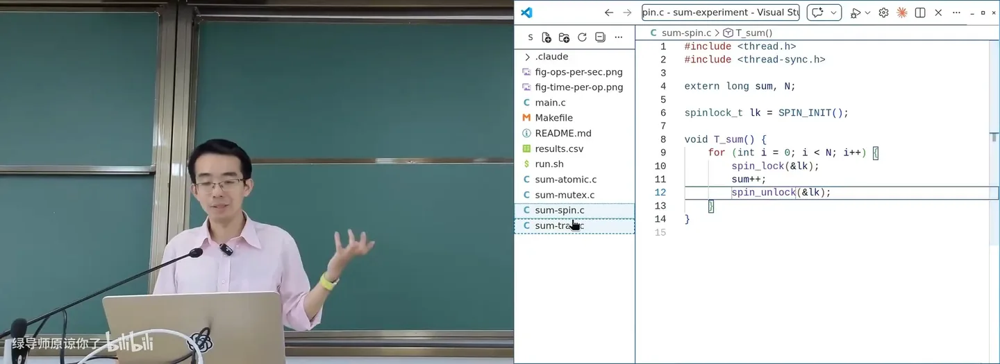
📷 线程数增加后，串行化 sum++ 无法继续加速
回到原视频 (00:16:30)
1.3 Scale Up 与 Scale Out
Scale Up：
- 单机增加核心与线程；
- 共享内存；
- 同步成本低但 cache coherence 开销高。
Scale Out：
- 增加机器节点；
- 通过消息通信；
- 节点内共享内存，节点间网络；
- 真正瓶颈变成网络、容错、功耗和调度。
flowchart TD
A["Scale Up"] --> B["更多 CPU / 线程 / 核心"]
A --> C["共享内存"]
A --> D["Cache coherence / NUMA"]
E["Scale Out"] --> F["更多机器 / 节点"]
E --> G["消息通信"]
E --> H["网络 / 容错 / 功耗"]
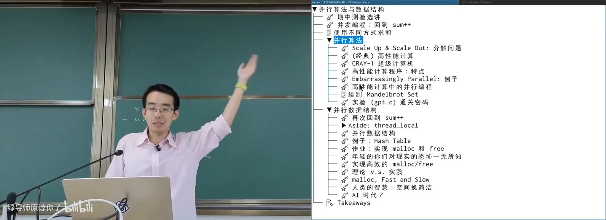
📷 Scale Up 与 Scale Out 的两种增长路线
回到原视频 (00:20:30)
2. 用计算图分解问题
2.1 任意并行问题都是计算图
节点表示计算，边表示依赖：
u → v
表示 u 的结果必须先行产生。
如果每个节点的本地计算远多于同步开销，程序就可以扩展。
flowchart TD
A["节点 0"] --> B["节点 1"]
A --> C["节点 2"]
A --> D["节点 3"]
B --> E["节点 4"]
C --> E
D --> E
2.2 太细的任务划分反而糟糕
例如动态规划：
dp[i][j] = f(dp[i-1][j], dp[i][j-1], dp[i-1][j-1])
为每个 dp[i][j] 创建线程和条件变量：
- 每个节点只有几条算术运算；
- 同步和唤醒开销远大于计算；
- 并行度大不等于性能好。
flowchart LR
A["每个 dp[i][j] 一个节点"] --> B["极小计算量"]
B --> C["大量锁 / 条件变量 / 唤醒"]
C --> D["同步开销主导"]
D --> E["扩展性反而下降"]
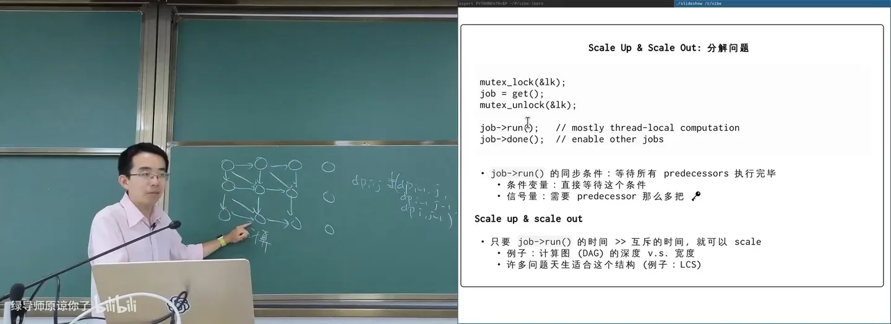
📷 为每个最小 DP 状态创建任务会造成同步开销过大
回到原视频 (00:21:30)
2.3 分块、斜切与流水线
更好的划分方式：
- 初始小三角整体串行计算；
- 中间按对角线分块；
- 并行度增大后再切成更多块；
- 块内独立计算，块间按层同步。
flowchart TD
A["小规模：整体串行"] --> B["中等规模：按对角线切块"]
B --> C["更大规模：更多块并行"]
C --> D["每轮边界同步"]
D --> E["下一层计算"]
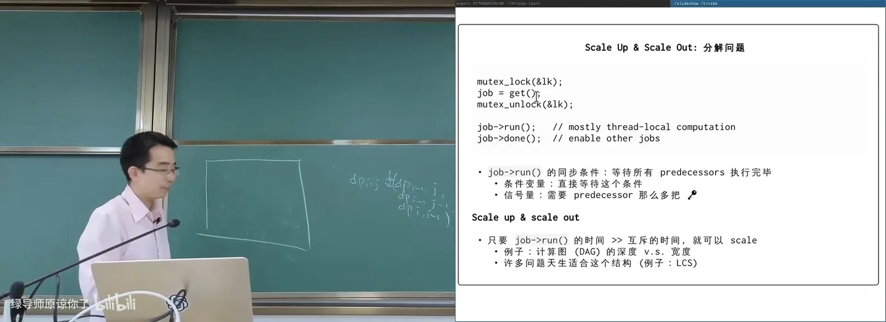
📷 动态规划按对角线分块以减少同步
回到原视频 (00:23:00)
3. 高性能计算
3.1 从数值模拟开始
高性能计算（HPC）最初服务于数值密集型科学任务：
- 物理系统模拟；
- 核爆炸和有限元；
- 天气预报；
- 航天、制造、能源和制药；
- 区块链 proof-of-work；
- AI 推理与训练。
flowchart LR
A["物理模型"] --> B["网格离散化"]
B --> C["大规模数值计算"]
C --> D["超级计算机 / 集群"]
D --> E["更高精度模拟"]
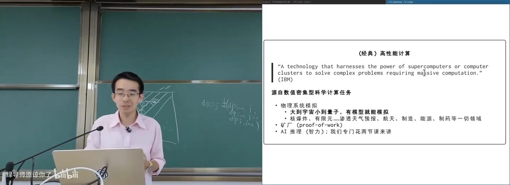
📷 高性能计算把物理模型转化为超大规模数值计算
回到原视频 (00:25:00)
3.2 Cray-1：超级计算机的历史
Cray-1（1976）被称为“世界上最昂贵的沙发”：
- 138 MFLOPS；
- 功耗约 115 kW；
- 底座造型甚至被戏称为可以坐人。
对比今天：
- 移动端 SoC 可达数 TFLOPS；
- 专用 AI ASIC 可达到数百 TOPS；
- 中国超算榜单使用 PFLOPs 计量。
flowchart LR
A["Cray-1: 138 MFLOPS / 115kW"] --> B["现代移动 SoC: TFLOPS"]
B --> C["专用 ASIC: 数百 TOPS"]
C --> D["超算: PFLOPs"]
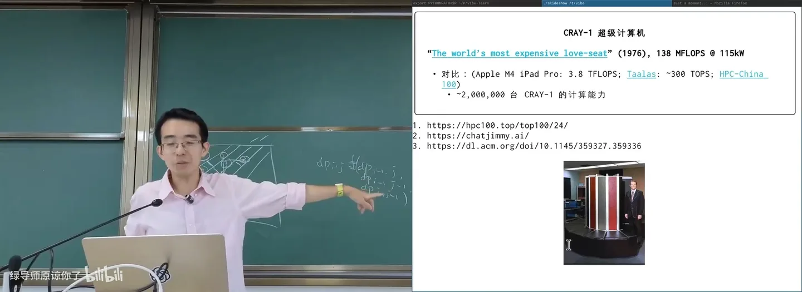
📷 Cray-1 的历史设计与现代算力对比
回到原视频 (00:28:20)
3.3 空间局部性与网格计算
物理世界具有空间局部性：
- 大系统可切分为网格；
- 网格内部独立计算；
- 只有边界与其他网格交互；
- 计算量远大于边界同步。
flowchart TD
A["全局物理系统"] --> B["切分为大量网格块"]
B --> C["块内本地计算"]
C --> D["边界数据交换"]
D --> E["进入下一时间步"]
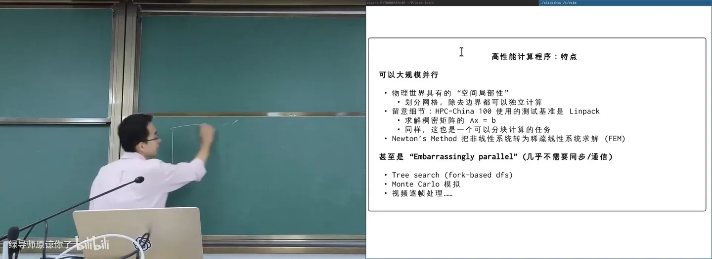
📷 网格分块让绝大部分计算在本地完成
回到原视频 (00:33:00)
3.4 Linpack 与线性方程组
HPC 基准 Linpack 求解稠密线性方程组：
Ax = b
线性方程组重要，是因为很多非线性系统可以通过 Newton 方法离散化为线性系统：
nonlinear system
→ Newton iteration
→ sparse linear system
→ dense local blocks
flowchart LR
A["非线性物理系统"] --> B["Newton 法"]
B --> C["稀疏线性系统"]
C --> D["分块求解"]
D --> E["稠密线性代数计算"]
3.5 Embarrassingly Parallel
有些任务几乎不需要同步：
- fork-based DFS；
- Monte Carlo 采样；
- 视频逐帧处理；
- 图像的每个像素计算。
flowchart TD
A["大任务"] --> B["拆成大量独立子任务"]
B --> C1["任务 1"]
B --> C2["任务 2"]
B --> C3["任务 3"]
B --> CN["任务 N"]
C1 --> D["汇总结果"]
C2 --> D
C3 --> D
CN --> D
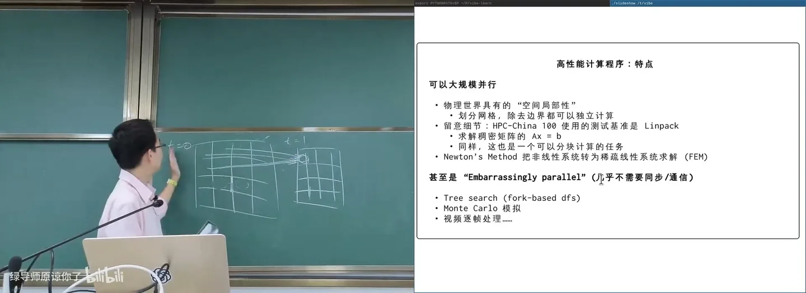
📷 Embarrassingly Parallel：任务几乎不需要同步
回到原视频 (00:36:30)
3.6 并行树搜索
以围棋搜索为例：
- 先串行展开若干层；
- 得到数百万个搜索节点；
- 将节点公平分配到线程或机器；
- 独立搜索；
- 合并最优结果。
flowchart TD
A["根节点"] --> B["串行展开几层"]
B --> C["大量叶子任务"]
C --> D1["Worker 1"]
C --> D2["Worker 2"]
C --> D3["Worker 3"]
D1 --> E["合并结果"]
D2 --> E
D3 --> E
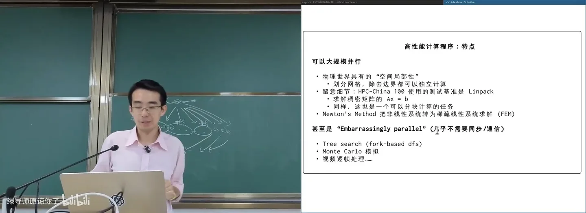
📷 并行树搜索先产生任务，再大规模并行
回到原视频 (00:39:30)
4. Mandelbrot 与 OpenMP
4.1 每个像素独立
Mandelbrot 集合研究复迭代：
z_{n+1} = z_n^2 + c
对复平面上每个 c 判断轨迹是否有界。
每个像素完全独立，因此可以：
- 按像素分配；
- 按行列块分配；
- 动态任务调度。
flowchart TD
A["复平面区域"] --> B["采样每个点 c"]
B --> C["迭代 z² + c"]
C --> D{"是否发散？"}
D -- "是" --> E["按迭代次数着色"]
D -- "否" --> F["属于集合"]
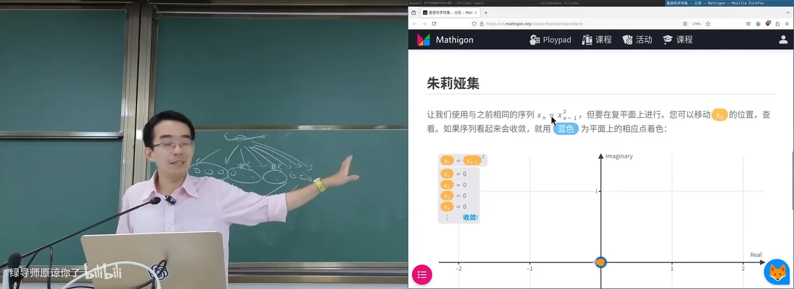
📷 Mandelbrot 集的每个像素都是独立计算
回到原视频 (00:42:00)
4.2 分形边界与可视化
分形边界不断放大仍能出现精细结构。可视化有助于重新走一遍数学概念形成的过程，而不是只记公式。
flowchart LR
A["数学定义"] --> B["交互式可视化"]
B --> C["观察分形结构"]
C --> D["形成直觉"]
D --> E["回到计算 / 推导"]
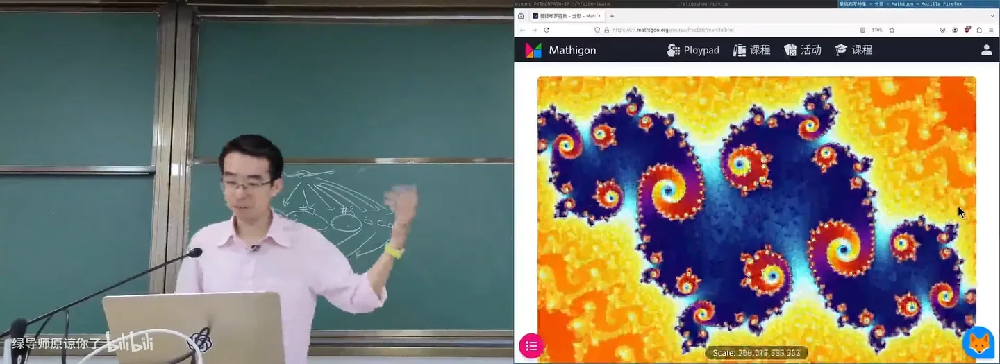
📷 Mandelbrot 集合边界的自相似细节
回到原视频 (00:45:30)
4.3 OpenMP 的最小并行化
原本是顺序循环：
for (int i = 0; i < width; i++) {
render_column(i);
}
加入：
#pragma omp parallel for
for (int i = 0; i < width; i++) {
render_column(i);
}
程序自动并行。
flowchart TD
A["顺序 for 循环"] --> B["#pragma omp parallel for"]
B --> C["编译器生成并行代码"]
C --> D["线程池"]
D --> E["迭代分配给线程"]
E --> F["隐式同步"]
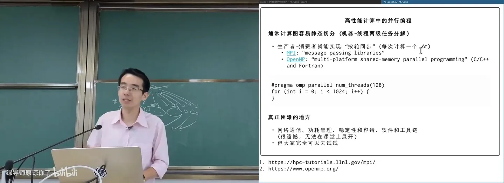
📷 OpenMP pragma 自动并行化独立循环
回到原视频 (00:48:30)
4.4 单线程与 16 线程
6400×6400 图像：
- 单线程约 18 秒；
- 16 线程约 3 秒；
- 未达到理想 16 倍，但已有显著提升。
flowchart LR
A["单线程：约 18s"] --> B["16 线程：约 3s"]
B --> C["接近 6x 加速"]
C --> D["受启动 / 内存 / 调度限制"]
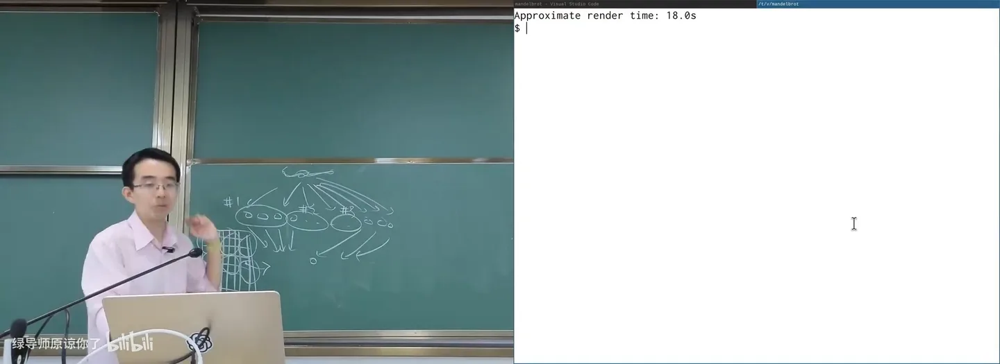
📷 Mandelbrot 单线程和 16 线程渲染时间对比
回到原视频 (00:51:40)
4.5 HPC 真正的困难
并行循环只是表面。实际 HPC 还包含：
- 高速网络；
- 机柜内 / 机柜间带宽不对称；
- NUMA 延迟；
- 通信不可靠；
- 功耗和散热；
- 节点故障；
- 存储与容错；
- 工具链与部署。
flowchart TD
A["HPC 难题"] --> B["网络带宽 / 延迟"]
A --> C["功耗 / 散热"]
A --> D["稳定性和容错"]
A --> E["存储和检查点"]
A --> F["工具链"]
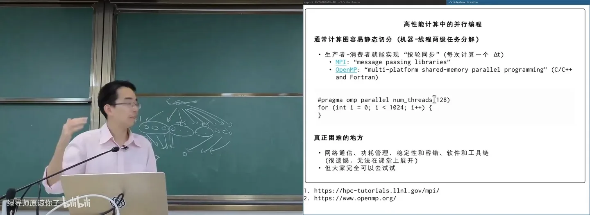
📷 HPC 的瓶颈不只在计算，还包括网络、功耗与容错
回到原视频 (00:55:00)
4.6 实验：并行 GPT 推理
实验给出一个顺序 GPT 推理程序。并行化相关部分很少：
#ifdef OMP
#include <omp.h>
#endif
#pragma omp parallel for
...
#pragma omp parallel for collapse(2)
...
关键是识别计算图中最顶层、最可并行化的循环，而不是盲目给所有循环加 pragma。
flowchart TD
A["顺序 GPT 推理"] --> B["Profiler 找到热点"]
B --> C["识别最外层可并行循环"]
C --> D["OpenMP / 线程库并行化"]
D --> E["验证结果与性能"]
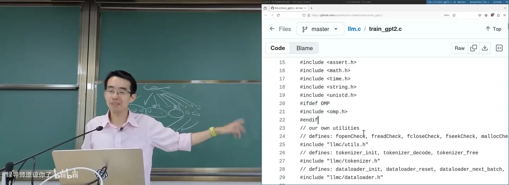
📷 GPT 推理实验只需少量并行化代码
回到原视频 (00:56:30)
4.7 Profiler 驱动优化
性能优化必须先测量：
- Profiler 找热点；
- 构造计算图；
- 识别独立子任务；
- 减少同步；
- 比较加速比；
- 检查瓶颈是否转移到 memory / I/O。
flowchart LR
A["运行 Profiler"] --> B["定位热点"]
B --> C["构造计算图"]
C --> D["并行化"]
D --> E["测量加速"]
E --> F{"瓶颈转移？"}
F -- "是" --> B
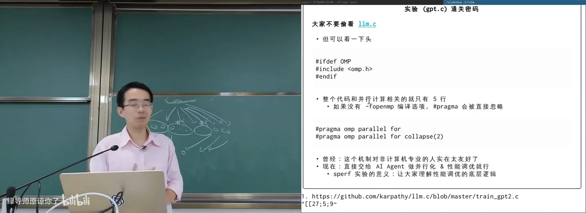
📷 用 profiler 找到真正需要并行化的部分
回到原视频 (00:58:20)
5. 并行数据结构：从大锁到局部锁
5.1 sum++ 不只是数字
大量实际系统频繁执行类似操作：
- 操作系统对象计数；
- 数据库索引；
- 点赞和热点统计；
- 游戏服务器位置更新；
- HFT 订单状态。
flowchart TD
A["锁保护的共享更新"] --> B["操作系统内核"]
A --> C["数据库"]
A --> D["社交平台计数器"]
A --> E["游戏服务器"]
A --> F["交易系统"]
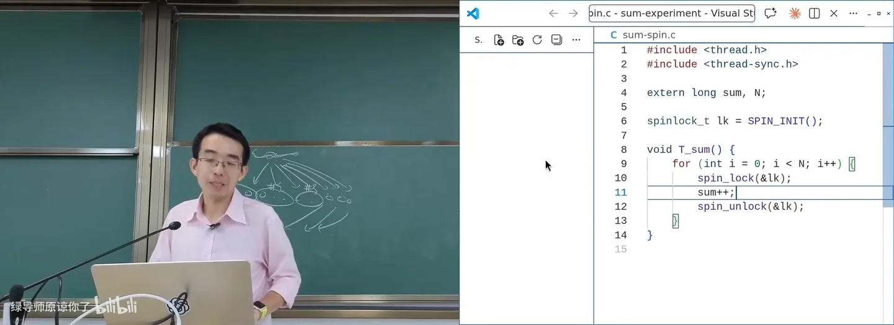
📷 高频共享更新来自操作系统、数据库和在线服务
回到原视频 (01:00:00)
5.2 可见性代价
一次 store 要传播到其他 CPU：
- cache coherence 协议；
- 缓存行所有权迁移；
- 总线或互连网络流量；
- 内存屏障。
严格可见性很贵。
flowchart LR
A["CPU 0 store"] --> B["L1 cache"]
B --> C["Coherence / Directory"]
C --> D["CPU 1 cache"]
C --> E["CPU 2 cache"]
D --> F["可见"]
E --> F
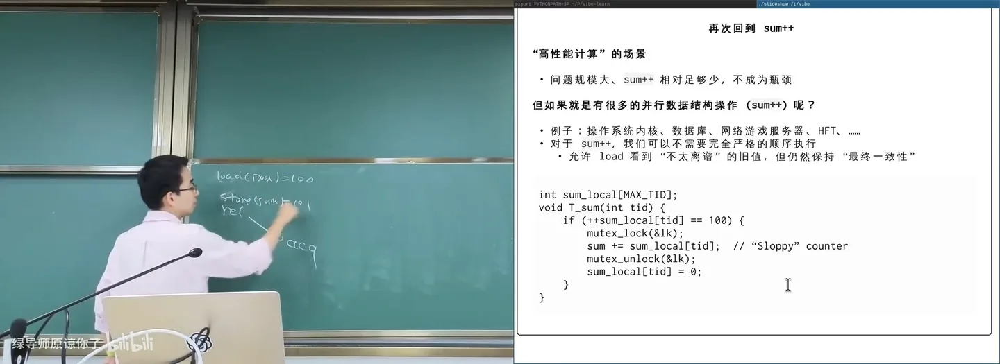
📷 严格可见性的传播依赖缓存一致性协议
回到原视频 (01:02:30)
5.3 Sloppy Counter
线程本地累计：
thread_local int sum_local;
void T_sum(void) {
if (++sum_local == 100) {
mutex_lock(&lk);
sum += sum_local;
mutex_unlock(&lk);
sum_local = 0;
}
}
绝大多数更新只写线程本地缓存，只有每 100 次才同步一次全局值。
flowchart TD
A["线程本地 sum_local++"] --> B{"达到阈值？"}
B -- "否" --> A
B -- "是" --> C["锁全局 sum"]
C --> D["sum += local"]
D --> E["local = 0"]
E --> A
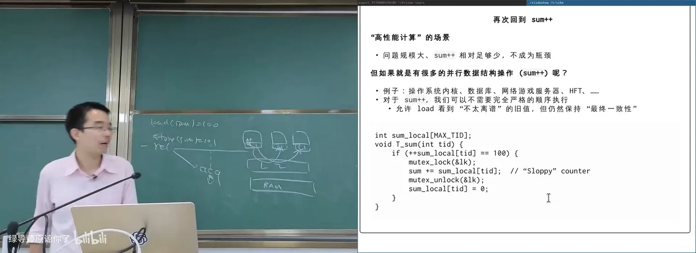
📷 Sloppy Counter 通过本地累计减少共享写
回到原视频 (01:04:00)
5.4 用时间上限保证旧值不会太旧
只按阈值刷新，在流量低时可能长时间不更新。可以增加超时：
if local >= 100 or elapsed >= 1ms:
flush local to global
这样任何读者看到的值最多落后约 1 毫秒。
flowchart TD
A["本地更新"] --> B{"达到 100 次？"}
B -- "是" --> E["Flush"]
B -- "否" --> C{"超过 1ms？"}
C -- "是" --> E
C -- "否" --> A
E --> F["全局 sum 更新"]
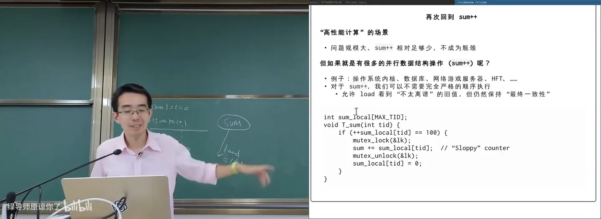
📷 阈值加超时控制本地累积的延迟上限
回到原视频 (01:06:30)
6. Thread-Local Storage
6.1 thread_local
C++11 / C23：
thread_local int sum_local;
thread_local int x = 42;
每个线程得到独立副本。
局部作用域中不能定义 thread_local，因为“每次函数调用的栈变量”和“每线程一份”语义冲突。
flowchart TD
A["thread_local int x"] --> B["Thread 1 独立 x"]
A --> C["Thread 2 独立 x"]
A --> D["Thread 3 独立 x"]
B --> E["地址互不相同"]
C --> E
D --> E
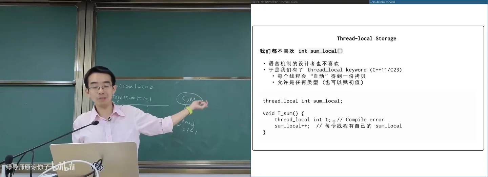
📷 `thread_local` 为每个线程生成独立变量
回到原视频 (01:07:20)
6.2 TLS 地址
访问方式：
global x → RIP-relative
local y → RSP-relative
thread_local z → TLS base + offset
x86-64 利用 fs 段寄存器保存当前线程的 TLS base。
flowchart LR
A["全局变量"] --> B["RIP / 数据区"]
C["栈变量"] --> D["RSP + offset"]
E["thread_local"] --> F["FS base + TLS offset"]
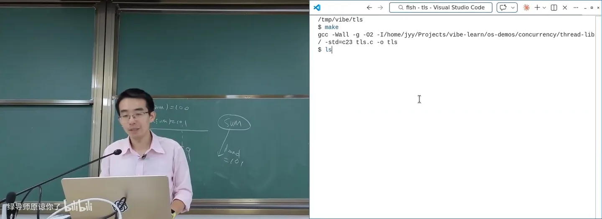
📷 TLS 变量通过线程基址和固定偏移访问
回到原视频 (01:08:20)
6.3 汇编与 .tdata
线程局部变量存放在：
.tdata：有初值的模板数据；.tbss：零初始化数据；- TLS 区域大小在编译时确定。
flowchart TD
A[".tdata"] --> B["有初值的 TLS 模板"]
C[".tbss"] --> D["零初始化 TLS"]
B --> E["线程创建时复制 / 初始化"]
D --> E
E --> F["线程私有 TLS 区域"]
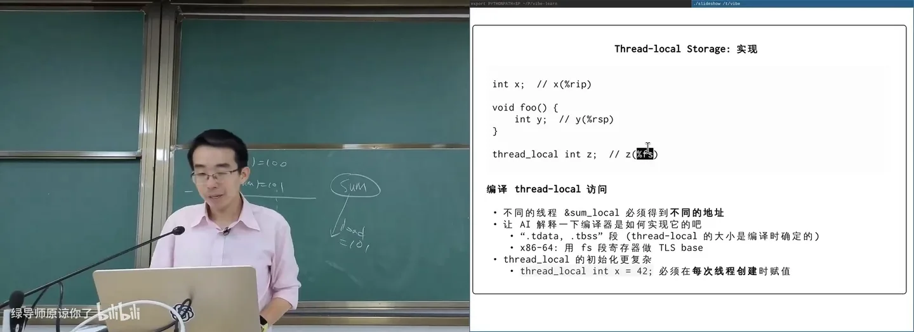
📷 ELF 中的 `.tdata` / `.tbss` 段
回到原视频 (01:09:50)
6.4 初始值由谁设置
thread_local int x = 42 的 42 首先位于 ELF 的 TLS 模板中。
线程创建时，运行时或 libc：
- 分配线程控制块；
- 分配栈和 TLS 区域；
- 把
.tdata模板复制到新线程 TLS； - 设置
fsbase； - 再启动线程函数。
flowchart TD
A["创建线程"] --> B["分配栈 / TCB / TLS"]
B --> C["复制 .tdata 初值"]
C --> D["设置 FS / TLS base"]
D --> E["启动线程函数"]
E --> F["thread_local x 初始为 42"]
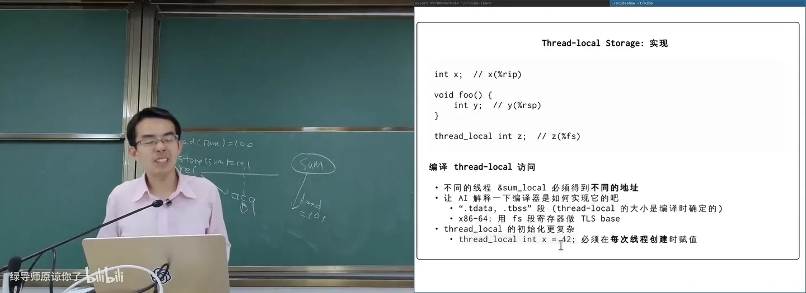
📷 线程创建时复制 TLS 初始化模板
回到原视频 (01:11:00)
7. 细分锁
7.1 数据结构天生具有局部性
数据结构以分散方式存储：
- 数组；
- 链表；
- 平衡树；
- 图；
- 哈希表。
访问不同元素往往互不冲突。
flowchart LR
A["整个数据结构一把大锁"] --> B["所有访问排队"]
B --> C["扩展性差"]
D["按元素 / 分段上锁"] --> E["不同部分并行"]
E --> F["冲突时才排队"]
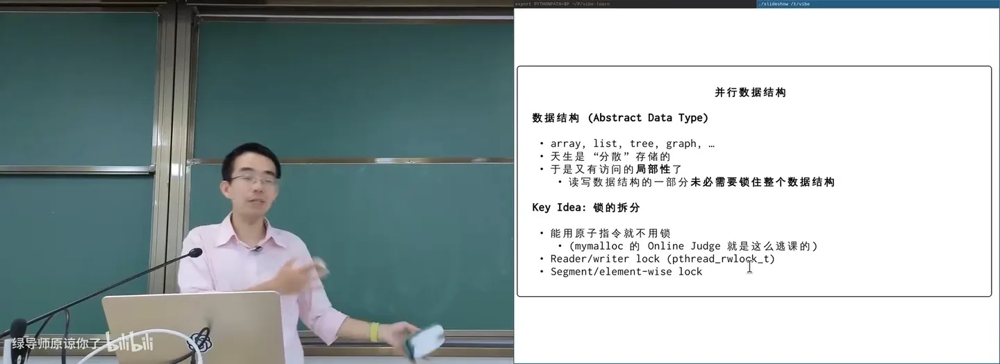
📷 数据结构局部性允许把一把大锁拆成多把锁
回到原视频 (01:16:30)
7.2 三种常见锁拆分方式
- 能用原子指令，就不用锁；
- 区分读锁与写锁；
- 按分段 / 元素加锁。
flowchart TD
A["锁拆分"] --> B["Atomic"]
A --> C["Reader / Writer Lock"]
A --> D["Segment / Element Lock"]
B --> E["最常见数值更新"]
C --> F["多读少写"]
D --> G["哈希表 / 数组 / 树"]
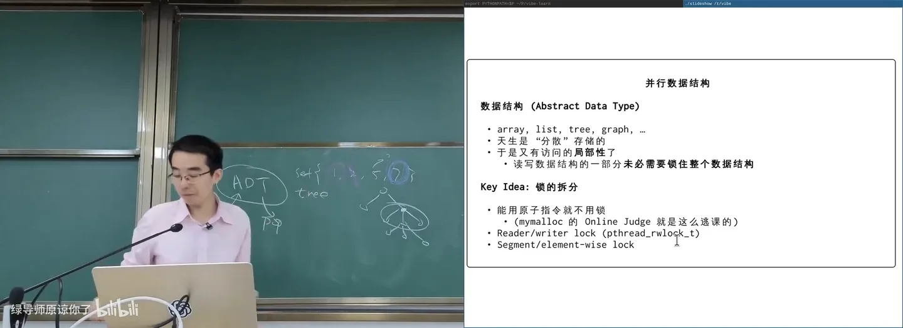
📷 原子操作、读写锁和分段锁三种拆分策略
回到原视频 (01:19:50)
7.3 在线评测的原子日志
课程 Online Judge 使用大日志数组记录并发操作：
size_t slot = atomic_fetch_add(&tail, 1);
log[slot] = event;
- 原子计数器负责分配唯一槽位；
- 每个线程写入自己的槽位；
- 读者按顺序分析日志。
flowchart LR
A["T1 分配 slot"] --> D["大日志数组"]
B["T2 分配 slot"] --> D
C["T3 分配 slot"] --> D
E["原子 tail++"] --> A
E --> B
E --> C
D --> F["顺序分析日志"]
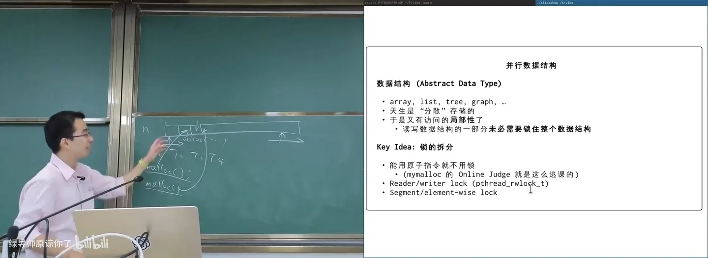
📷 原子计数器为并发日志分配唯一槽位
回到原视频 (01:21:30)
7.4 哈希表按 bucket 加锁
size_t b = hash(key) % nbuckets;
lock(buckets[b].lock);
/* lookup / insert */
unlock(buckets[b].lock);
不同 bucket 可并行。
flowchart TD
A["key"] --> B["hash(key) % N"]
B --> C["bucket index"]
C --> D["bucket lock"]
D --> E["查找 / 插入 / 删除"]
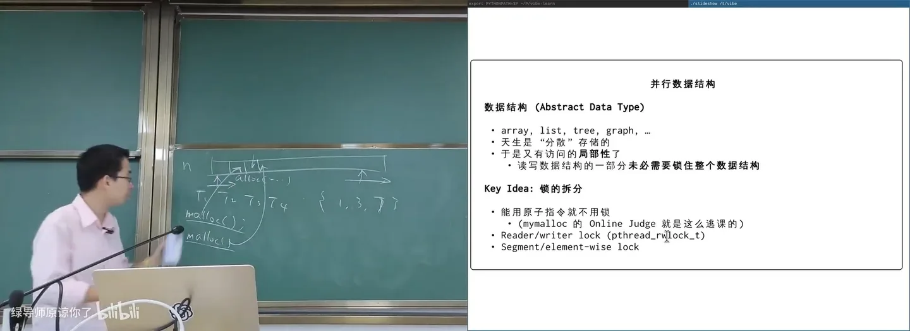
📷 哈希表按 bucket 细粒度加锁
回到原视频 (01:22:50)
7.5 Open Addressing 的 Tombstone
开放寻址中，冲突元素会沿探测序列放置：
X at h(X)
Z at next(h(X))
W at next(next(h(X)))
删除 Z 不能直接清空，否则查找 W 的路径断裂。
必须写入 tombstone，表示“此处曾占用，仍需继续探测”。
flowchart LR
A["h(X)"] --> B["X"]
B --> C["Z"]
C --> D["W"]
C -->|"直接删除"| E["查找 W 提前终止"]
C -->|"Tombstone"| F["查找继续到 W"]
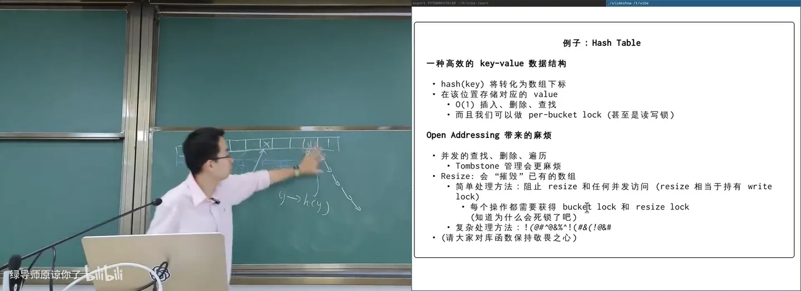
📷 Open Addressing 删除需要 Tombstone
回到原视频 (01:24:30)
7.6 Resize：并发哈希表最难的时刻
扩容时：
- 分配新表；
- 迁移所有旧元素；
- 同时处理并发查找、插入和删除；
- 不能长时间冻结整个数据结构；
- 需要细粒度锁或渐进式迁移。
flowchart TD
A["触发 resize"] --> B["分配 1.5x 新表"]
B --> C["逐 bucket 迁移"]
C --> D{"迁移期间仍有操作？"}
D -- "大锁" --> E["全表暂停，简单但慢"]
D -- "细粒度" --> F["允许并发，复杂且易错"]
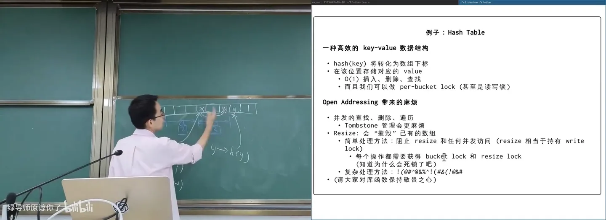
📷 并发哈希表 resize 需要协调旧表和新表
回到原视频 (01:25:30)
8. 总结：减少同步，而不是消灭同步
这一讲从 sum++ 的扩展性出发，建立了完整优化路线：
- 完全 serializability 保证正确，但限制 scalability；
- Scale Up 增加单机 CPU / 线程，Scale Out 增加机器；
- 并行问题的本质是计算图；
- 任务划分不能过细，否则同步开销主导；
- HPC 利用空间局部性、网格和循环级并行；
- OpenMP 通过 pragma 简洁并行化独立循环；
- Mandelbrot 是可按照像素和块划分的 embarrassingly parallel 任务；
- HPC 真正的瓶颈包括网络、功耗、散热和容错；
- 并行数据结构的目标是减少共享写；
- Sloppy Counter 用线程本地累计降低全局锁频率；
- 超时可给松可见性提供延迟上限；
thread_local为每个线程提供独立变量；- TLS 通过
.tdata、.tbss和线程基址实现； - 锁拆分包括 atomic、reader-writer lock、segment lock；
- 哈希表可按 bucket 加锁；
- Open Addressing 需要 Tombstone；
- Resize 是并发哈希表最复杂的路径。
flowchart LR
A["完全串行化"] --> B["识别局部性"]
B --> C["计算图分块"]
C --> D["线程本地状态"]
D --> E["松可见性 / 延迟合并"]
E --> F["细粒度锁 / 原子操作"]
F --> G["Scale Up / Scale Out"]
性能优化的核心原则可以概括为：
把绝大部分工作留在本地，只在真正必要的共享边界上同步；始终依据真实 workload 测量，而不是凭直觉承诺 scalability。
附：官方参考与延伸阅读
以下链接来自官方讲义第 18 讲及课堂内容：
- 不同方式求和实验
- Cray-1: The World's Most Expensive Love Seat
- MPI Tutorials
- OpenMP
- HPC China TOP100
- Mandelbrot Set Walkthrough
- Mandelbrot demo
- Andrej Karpathy, llm.c
- Thread-local Storage demo
官方课程资料：
版权与署名：本讲课程材料由蒋炎岩（jyy）编写。课程讲义与幻灯片采用 Creative Commons BY-NC 4.0 许可；本电子书保留课程出处、作者署名与许可说明。
课程来源与版权说明
课程：2026 春季学期《操作系统原理》
讲师：蒋炎岩（jyy）
官方课程主页：https://jyywiki.cn/OS/2026/
官方讲义：https://jyywiki.cn/OS/2026/lect18.md
视频来源：Bilibili BV1WqdTBiEkN
版权说明：课程讲义与幻灯片归蒋炎岩所有，采用 Creative Commons BY-NC 4.0 许可；本电子书是对课堂讲授的书面化重构，保留出处与许可说明。